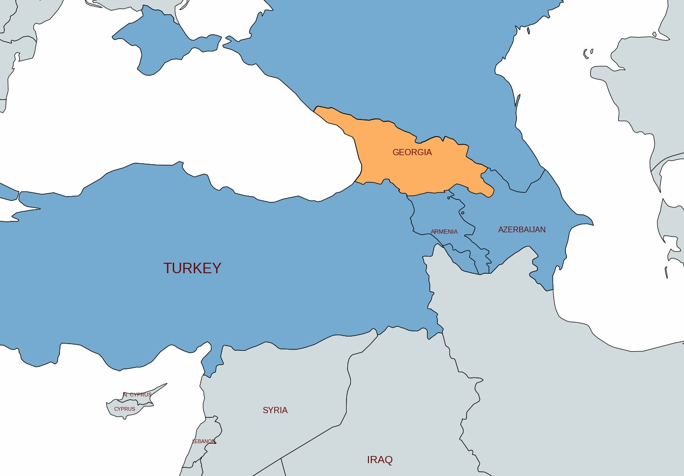
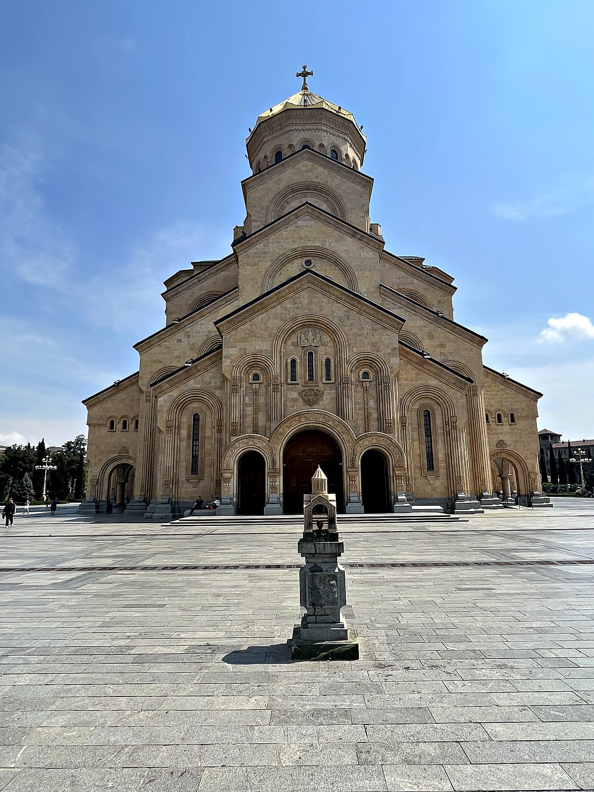
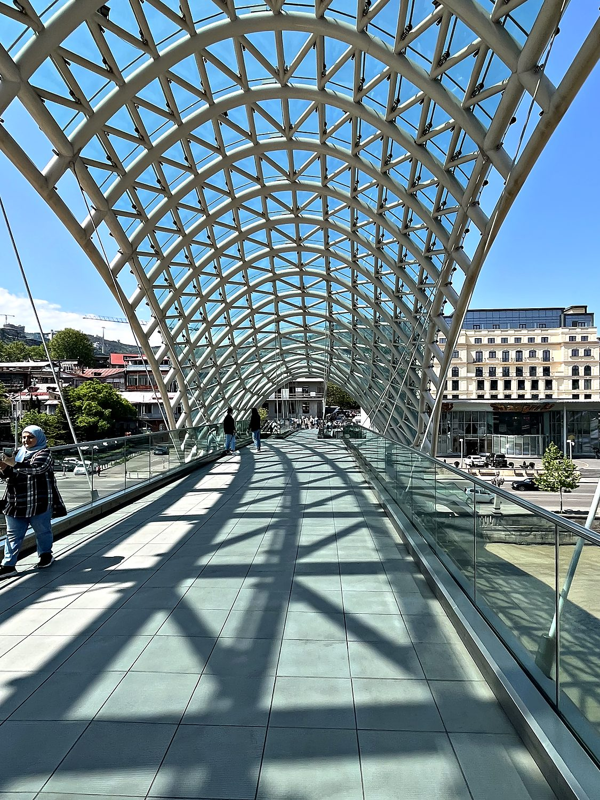
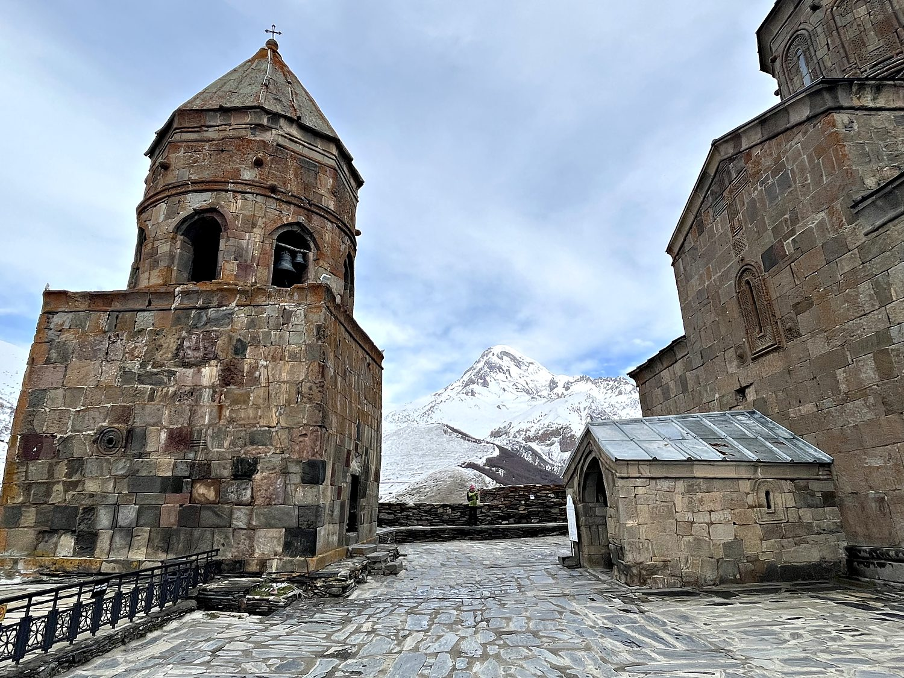

I traveled through Georgia in late April 2023, crossing overland from Armenia into a country that turned out to be one of the most pleasant surprises of my travels. Not the American state, but the nation wedged into the South Caucasus between Russia and Turkiye Georgia has its own ancient alphabet, a language related to nothing else on Earth, a fierce tradition of hospitality, and some of the most dramatic mountain scenery I have ever laid eyes on. I split my time between the wonderfully quirky capital of Tbilisi and the high Caucasus around Kazbegi, where snow still buried the peaks in spring. Along the way I met a remarkable cross-section of people, ranging from Georgians proud of their improbable survival, to a steady stream of Russians who had fled here to escape conscription. These conversations gave me a window into a war being felt keenly just across the border.
Tbilisi, the capital, is a city that rewards wandering. Founded in the 5th century around the hot sulphur springs that still steam beneath the old town, it tumbles down both banks of the Mtkvari River in a glorious jumble of carved wooden balconies, Orthodox churches, Art Nouveau facades, and Soviet concrete. I scaled the walls of the Narikala Fortress for a sweeping view over the rooftops, wandered the ancient bathhouse district, and marveled at the sheer volume and creativity of the street art. Some of the graffiti was beautiful, some political, and a fair amount that was, let us say, anatomically enthusiastic. From the capital I made the spectacular journey north along the Georgian Military Highway into the Caucasus, past 2,000-meter passes still blinding with snow, to the mountain town of Kazbegi and one of the most breathtaking settings I have ever seen.

Georgia possesses one of the oldest continuous cultures in the world. It was among the very first states to adopt Christianity in 337 AD, only shortly after neighboring Armenia, and it has clung to its Orthodox faith through seventeen centuries of invasion. Its unique alphabet, one of only a handful of writing systems on Earth developed independently, dates back over 1,500 years. For much of its history Georgia was a patchwork of kingdoms squeezed between the great powers of Persia, Byzantium, the Mongols, and the Ottomans. It enjoyed a brief golden age of unity and cultural flourishing under monarchs like King David the Builder and Queen Tamar in the 11th and 12th centuries before it fragmented again under the weight of repeated invasions.
In the 19th century Georgia was absorbed into the Russian Empire, and after a fleeting spell of independence following the Russian Revolution, it was forcibly incorporated into the Soviet Union in 1921. Ironically, the USSR would later be led by a Georgian, Joseph Stalin, born in the town of Gori. Georgia regained its independence when the USSR collapsed in 1991, and it has since pursued a determinedly pro-Western, pro-European path. This choice has repeatedly brought it into conflict with Moscow, most sharply in the brief 2008 war that left Russian troops occupying the breakaway regions of Abkhazia and South Ossetia. That tension is palpable today, and everywhere in Tbilisi I saw Ukrainian flags and pointed anti-Kremlin graffiti. The many young Russians draft-dodgers and dissidents that I met spoke of a homeland they felt they could no longer return to, and had fled to Georgia since they could visit visa-free. However, many Georgians had hostility towards them, since their relative affluence was causing significant inflation, and pricing local Georgians out of their own city.
Dominating the Tbilisi skyline from its hilltop perch is the Holy Trinity Cathedral, known in Georgian as Sameba. This is a vast golden-domed monument to the country's Orthodox faith. Despite looking like a timeless medieval basilica, it was only completed in 2004, built in the years after independence as a grand statement of national and religious revival following the atheism of the Soviet decades. It is one of the largest Orthodox cathedrals in the world, rising over 80 meters, and its scale is genuinely humbling as you cross the enormous stone plaza toward the entrance. Whatever one makes of building something so deliberately ancient-looking in the 21st century, it undeniably captures the depth of feeling Georgians hold for a faith that has anchored their identity through 1,700 years of turmoil.

For a complete contrast, few things capture modern Tbilisi better than the Bridge of Peace, a striking glass-and-steel pedestrian bridge that snakes across the Mtkvari River in a great undulating canopy of glass and lights. Designed by an Italian architect and opened in 2010, it links the medieval old town with the newer districts and the riverside Rike Park. It is home to a pair of gleaming metal tubes locals affectionately (and accurately) nicknamed "the hair-dryers." Not everyone loved the ultramodern intrusions into the historic center when they went up, but I found the bridge genuinely beautiful, especially the way its curving roof frames the old town and the fortress on the hills beyond. It is a neat physical symbol of a country trying to stride confidently into a European future while carrying its ancient past on its back.

The undisputed highlight of my time in Georgia was the journey to Gergeti Trinity Church, a lone 14th-century stone chapel that sits on a green ridge high above the town of Kazbeg. It is dwarfed by the colossal snow-clad slopes of Mount Kazbek, one of the highest peaks in the Caucasus at over 5,000 meters. I hiked up toward it through mud and then deepening snow, passing a lovely crew of Russian trekkers who insisted on gifting me a Snickers bar and some tea, and eventually turned back short of the summit as the snow grew avalanche-deep. But the image of that solitary church against the immense white wall of the mountains, pictured here up close with its ancient bell tower, is one that will stay with me forever. It is the kind of scene that makes you understand why people build churches in impossible places: some views feel like they demand a little reverence.
